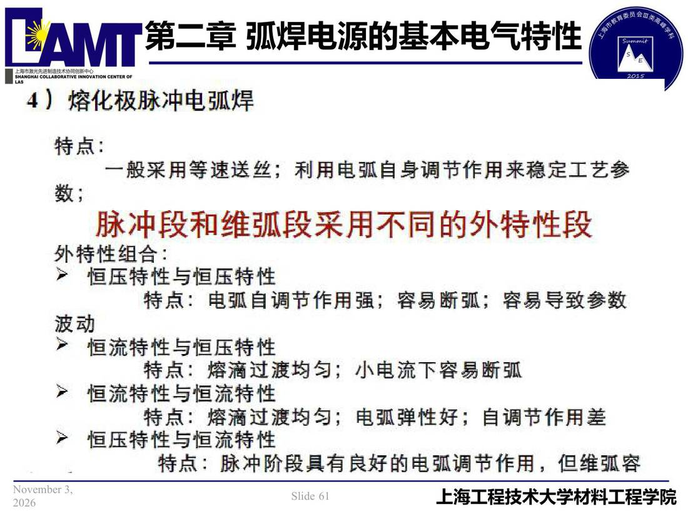

02 第2章 基本电气特性/p061 4）熔化极脉冲电弧焊
p061 4）熔化极脉冲电弧焊
📄 原文：📄 弧焊电源 课件（PDF 第 61 页）（幻灯片 61/273；PDF 第 61 页）
4）熔化极脉冲电弧焊

讲义原文
本页在课件中是纯图文版式（无文字层），内容以页图与下面的 OCR 文本为准。
页面文字（OCR 机读，可能有错字，以页图为准）
4）熔化极脉冲电弧焊 特点： 一般采用等速送丝；利用电弧自身调节作用来稳定工艺参 脉冲段和维弧段采用不同的外特性段 外特性组合： ▶ 恒压特性与恒压特性 特点：电弧自调节作用强；容易断弧；容易导致参数 波动 ▶ 恒流特与恒压特性 特点：熔滴过渡均匀；小电流下容易断弧
恒流特性与恒流特性 特点：熔滴过渡均匀；电弧弹性好；自调节作用差 ＞ 恒压特性与恒流特性 特点：脉冲阶段具有良好的电弧调节作用，但维弧容